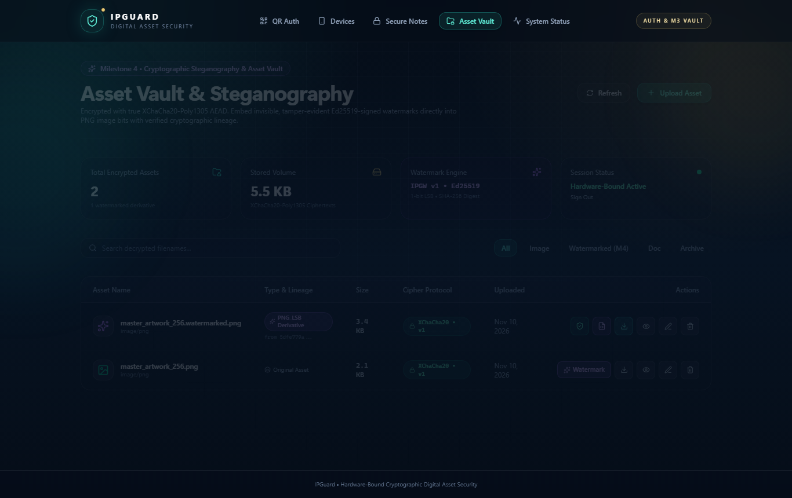

IPGuard — Secure Digital Asset Protection Platform
Decoupled zero-knowledge file vault eliminating shared secrets via non-exportable hardware keys inside Android TEE/StrongBox and LSB cryptographic watermarks.
Architecture:
React 19, FastAPI async, PostgreSQL, XChaCha20-Poly1305 AEAD
Validation:
209/209 passing Pytest assertions (100%), Playwright E2E suites
React 19
FastAPI
Android Keystore
ECDSA P-256
Ed25519